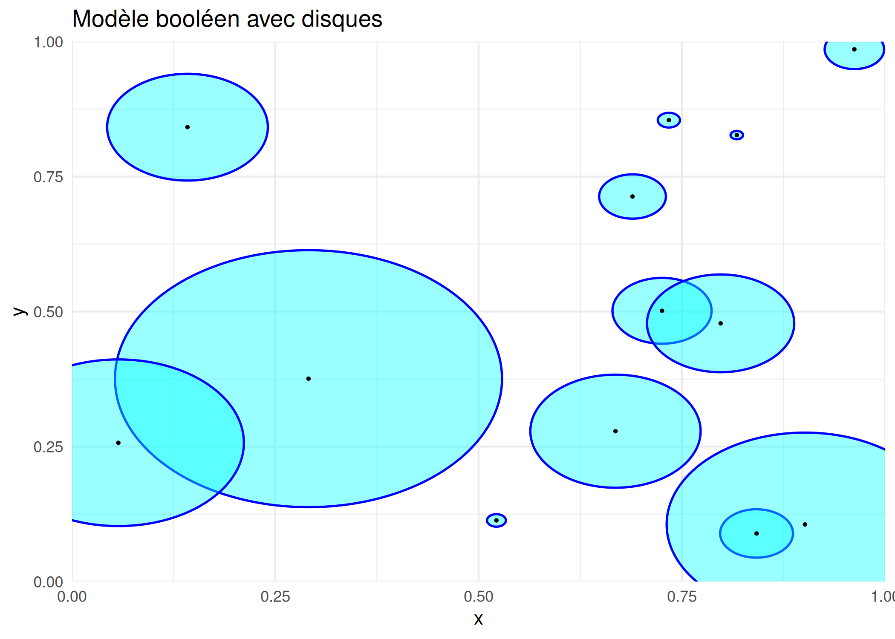
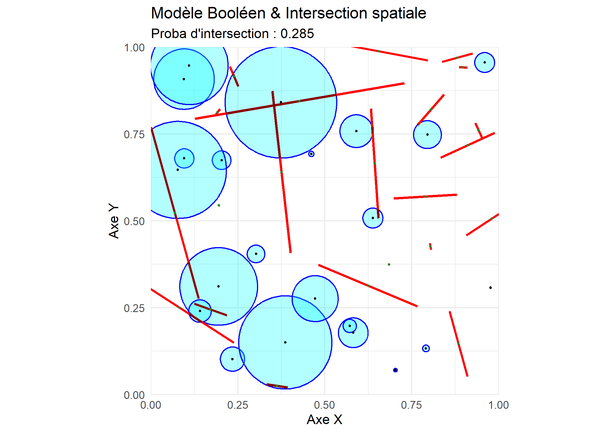
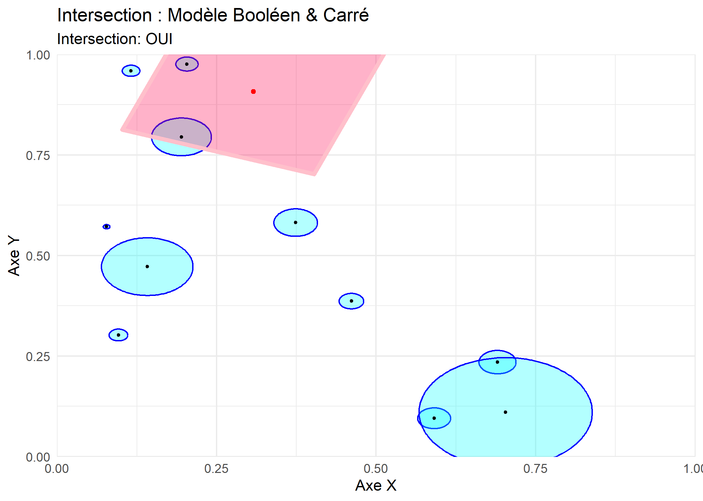

On fait apparaître des points \(x_i\) sur une région selon un processus de Poisson homogène sur la région \([0,1] \times [0,1]\) du plan, et on pose un disque \(\Xi_i\) sur chaque point, de telle sorte que chaque point est le centre de chaque disque. Dans ce cas-ci, pour chaque rayon de cercle, on a \(R(x_i) \sim \text{exp}(\lambda)\).Ici, le modèle booléen est \[ \Xi= \cup_{i \in I}( \Xi_i \oplus x_i).\]
Code
library(ggplot2)set.seed(41)borne_inferieure_axe_x <-0; borne_superieure_axe_x <-1borne_inferieure_axe_y <-0; borne_superieure_axe_y <-1longueur_intervalle_x <- (borne_superieure_axe_x) - (borne_inferieure_axe_x)longueur_intervalle_y <- (borne_superieure_axe_y) - (borne_inferieure_axe_y)nombre_points <-rpois(1, lambda=17*longueur_intervalle_x*longueur_intervalle_y)centres_x_cercles<-runif(nombre_points, borne_inferieure_axe_x, borne_superieure_axe_x)centres_y_cercles<-runif(nombre_points, borne_inferieure_axe_y, borne_superieure_axe_y)rayons_cercles<-rexp(nombre_points,11)theta <-seq(0, 2* pi, length.out =200)nombre_cordes <-rpois(1, lambda=17*longueur_intervalle_x*longueur_intervalle_y)centres_x_cordes<-runif(nombre_cordes, borne_inferieure_axe_x, borne_superieure_axe_x)centres_y_cordes<-runif(nombre_cordes, borne_inferieure_axe_y, borne_superieure_axe_y)longueurs_cordes<-rexp(nombre_cordes,11)orientations_cordes<-runif(nombre_cordes,0,pi)# 1. Génération des cercles sans aucun package externedf_cercles <-do.call(rbind, lapply(1:nombre_points, function(i) {data.frame(id = i,x = centres_x_cercles[i] + rayons_cercles[i] *cos(theta),y = centres_y_cercles[i] + rayons_cercles[i] *sin(theta) )}))# 2. Génération des cordes (calcul vectoriel direct)df_cordes <-data.frame(x = centres_x_cordes - longueurs_cordes *cos(orientations_cordes),y = centres_y_cordes - longueurs_cordes *sin(orientations_cordes),xend = centres_x_cordes + longueurs_cordes *cos(orientations_cordes),yend = centres_y_cordes + longueurs_cordes *sin(orientations_cordes),cx = centres_x_cordes,cy = centres_y_cordes)# 3. Tracé avec ggplot2 uniquementggplot() +# Cercles (cyan avec bordure bleue)geom_polygon(data = df_cercles, aes(x = x, y = y, group = id), fill ="cyan", alpha =0.4, color ="blue", linewidth =0.6) +# Centres des cercles (points noirs)geom_point(data =data.frame(x = centres_x_cercles, y = centres_y_cercles), aes(x = x, y = y), color ="black", size =0.5) +# Contraintes d'affichage (Strictement limité entre 0 et 1 comme clip)coord_cartesian(xlim =c(borne_inferieure_axe_x, borne_superieure_axe_x),ylim =c(borne_inferieure_axe_y, borne_superieure_axe_y),expand =FALSE) +labs(title ="Modèle booléen avec disques", x ="x", y ="y") +theme_minimal()

3.2 Simulation de deux modèles booléens superposés, l’un avec des disques, l’autre avec des cordes’intersection entre disques et cordes
On crée d’abord un modèle booléen \(\Xi_d\) avec des disques comme à la section précédente. On crée ensuite un second modéle booléen \(\Xi_c\) où les points\(x_{ci}\) sont à nouveau placés sur la partie du plan \([0,1] \times [0,1]\) selon un deuxiàme processus de Poisson, pour l’orientation de chaque corde\(\Xi_{ci}\), on a \(\theta_i \sim \text{uniforme}(0, \pi)\) et pour la longueur, on a \(\mathscr{l}_i \sim \text{exp}( \lambda_{ci})\). On peut calculer la longueur moyenne de chaque corde qui se trouve dans \(\Xi_d\) et la probabilité \(\mathbb{P}(x \in \Xi_d \vert x \in \Xi_c)\).
Code
library(spatstat)library(ggplot2)set.seed(40)# --- 1. CONFIGURATION ET PARAMÈTRES ---borne_inferieure_axe_x <-0borne_superieure_axe_x <-1borne_inferieure_axe_y <-0borne_superieure_axe_y <-1longueur_intervalle_x <- (borne_superieure_axe_x) - (borne_inferieure_axe_x)longueur_intervalle_y <- (borne_superieure_axe_y) - (borne_inferieure_axe_y)# Définition de la fenêtre d'observation principaleW_obs <-owin(c(borne_inferieure_axe_x, borne_superieure_axe_x), c(borne_inferieure_axe_y, borne_superieure_axe_y))# Fenêtre élargie pour éviter les effets de bord lors de la générationW_large <-owin(c(borne_inferieure_axe_x - longueur_intervalle_x, borne_superieure_axe_x + longueur_intervalle_x), c(borne_inferieure_axe_y - longueur_intervalle_y, borne_superieure_axe_y + longueur_intervalle_y))# --- 2. SIMULATION DES PROCESSUS ---nombre_points <-rpois(1, lambda =20* longueur_intervalle_x * longueur_intervalle_y)nombre_cordes <-rpois(1, lambda =20* longueur_intervalle_x * longueur_intervalle_y)centres_x_cercles <-runif(nombre_points, borne_inferieure_axe_x, borne_superieure_axe_x)centres_y_cercles <-runif(nombre_points, borne_inferieure_axe_y, borne_superieure_axe_y)rayons_cercles <-rexp(nombre_points, 20)centres_x_cordes <-runif(nombre_cordes, borne_inferieure_axe_x, borne_superieure_axe_x)centres_y_cordes <-runif(nombre_cordes, borne_inferieure_axe_y, borne_superieure_axe_y)longueurs_cordes <-rexp(nombre_cordes, 5) /2orientations_cordes <-runif(nombre_cordes, 0, pi)# --- 3. CALCULS GÉOMÉTRIQUES (spatstat) ---# Résolution du masque augmentée (dimyx=512) pour éviter l'erreur d'approximation numériqueliste_cercles <-list()for(i in1:nombre_points) { liste_cercles[[i]] <-disc(r = rayons_cercles[i], centre =c(centres_x_cercles[i], centres_y_cercles[i]), mask =TRUE, dimyx =512)}zone_cercles <-do.call(union.owin, liste_cercles)# Construction des segmentsx0 <- centres_x_cordes - longueurs_cordes *cos(orientations_cordes)y0 <- centres_y_cordes - longueurs_cordes *sin(orientations_cordes)x1 <- centres_x_cordes + longueurs_cordes *cos(orientations_cordes)y1 <- centres_y_cordes + longueurs_cordes *sin(orientations_cordes)# Utilisation de la fenêtre élargie pour ne pas couper les cordes de basetoutes_les_cordes <-psp(x0, y0, x1, y1, window = W_large)# Intersection des cordes avec l'union des cerclescordes_dans_cercles <- toutes_les_cordes[zone_cercles]# Calcul des statistiques d'intersectionlongueurs_intersections <-lengths_psp(cordes_dans_cercles)longueur_totale_initiale <-sum(lengths_psp(toutes_les_cordes))longueur_totale_intersections <-sum(longueurs_intersections)pourcentage_dans_cercles <- (longueur_totale_intersections / longueur_totale_initiale)# --- 4. EXTRACATION DES SEGMENTS INTERSECTÉS POUR GGPLOT2 ---# Conversion de l'objet psp spatstat en DataFramedf_cordes_inter <-as.data.frame(cordes_dans_cercles)# --- 5. PRÉPARATION DES DONNÉES DE BASE POUR GGPLOT2 ---theta <-seq(0, 2* pi, length.out =200)df_cercles_contours <-do.call(rbind, lapply(1:nombre_points, function(i) {data.frame(id = i,x = centres_x_cercles[i] + rayons_cercles[i] *cos(theta),y = centres_y_cercles[i] + rayons_cercles[i] *sin(theta) )}))df_cordes_initiales <-data.frame(x0 = x0, y0 = y0, x1 = x1, y1 = y1)# --- 6. VISUALISATION AVEC GGPLOT2 ---titre_graphe <-paste("Proba d'intersection :", round(pourcentage_dans_cercles , 3))ggplot() +# 1. Tracé des cercles (Masque booléen)geom_polygon(data = df_cercles_contours, aes(x = x, y = y, group = id), fill ="cyan", alpha =0.3, color ="blue", linewidth =0.5) +# 2. Tracé des cordes initiales complètes (en rouge)geom_segment(data = df_cordes_initiales, aes(x = x0, y = y0, xend = x1, yend = y1), color ="red", linewidth =0.9) +# 3. Tracé exclusif des segments intersectés calculés par spatstat (En rouge foncé)geom_segment(data = df_cordes_inter, aes(x = x0, y = y0, xend = x1, yend = y1), color ="darkred", linewidth =0.9) +# 4. Points centrauxgeom_point(data =data.frame(x = centres_x_cercles, y = centres_y_cercles), aes(x = x, y = y), color ="black", size =0.6) +geom_point(data =data.frame(x = centres_x_cordes, y = centres_y_cordes), aes(x = x, y = y), color ="forestgreen", size =0.6) +# Rognage strict de la fenêtre d'observation finale [0,1]coord_cartesian(xlim =c(borne_inferieure_axe_x, borne_superieure_axe_x),ylim =c(borne_inferieure_axe_y, borne_superieure_axe_y),expand =FALSE) +labs(title ="Modèle Booléen & Intersection spatiale",subtitle = titre_graphe, x ="Axe X", y ="Axe Y") +theme_minimal()

3.3 Simulation d’intersection entre un carré et plusieurs disques
On crée un modèle booléen \(\Xi_d\) avec des disques de la manière qu’aux deux sections précédentes sur la portion \([0,1] \times[0,1]\) du plan. On pose ensuite un point \(p_c=(x_c,y_c)\) tel que \(x_c \sim \text{uniforme}(0,1)\) et \(y_c \sim \text{uniforme}(0,1)\). Ce point sert de centre au carré que l’on pose sur cette portion du plan. La longueur de sa diagonale est donnée par \(d_c \sim \text{exp}( \lambda_c)\) et son orientation est donnée par \(\theta_c \sim uniforme(0, \pi /2)\). Ainsi, les coordonnées de ses sommets sont \(p_{kc}=(x_c+d_c \text{cos} ( \theta_c+ \frac{k\pi}{2})/2,y_c+d_c \text{sin}( \theta_c+ \frac{k\pi}{2})/2))\) où \(k \in \text{{1,2,3,4}}\) .On peut estimer avec un certain nombre de simulations la probabilité qu’il y ait une intersection entre le carré et au moins un des disques.
Code
library(spatstat)library(ggplot2)set.seed(40)# --- 1. CONFIGURATION ET PARAMÈTRES ---borne_inferieure_x <-0borne_superieure_x <-1borne_inferieure_y <-0borne_superieure_y <-1longueur_intervalle_x <- borne_superieure_x - borne_inferieure_xlongueur_intervalle_y <- borne_superieure_y - borne_inferieure_y# Fixé pour la reproductibilité# --- 2. GÉNÉRATION DES DONNÉES ---nombre_points <-rpois(1, lambda =10* longueur_intervalle_x * longueur_intervalle_y)coordonnees_x_points <-runif(nombre_points, borne_inferieure_x, borne_superieure_x)coordonnees_y_points <-runif(nombre_points, borne_inferieure_y, borne_superieure_y)rayons_cercles <-rexp(nombre_points, 20)coordonnees_x_centre_carre <-runif(1, borne_inferieure_x, borne_superieure_x)coordonnees_y_centre_carre <-runif(1, borne_inferieure_y, borne_superieure_y)longueur_demie_diagonale_carre <-rexp(1, 4) /2orientation_carre <-runif(1, 0, pi /2)# Calcul des sommets du carré tournéangles_toutes_diagonales <-seq(0, 2* pi, length.out =5)coordonnees_carre_x <- coordonnees_x_centre_carre + longueur_demie_diagonale_carre *cos(orientation_carre + angles_toutes_diagonales)coordonnees_carre_y <- coordonnees_y_centre_carre + longueur_demie_diagonale_carre *sin(orientation_carre + angles_toutes_diagonales)# --- 3. CALCULS GÉOMÉTRIQUES (spatstat) ---# Utilisation d'une grille plus fine (dimyx = 512) pour éviter les erreurs d'arrondi numériqueliste_cercles <-list()if (nombre_points >0) {for(i in1:nombre_points) { liste_cercles[[i]] <-disc(r = rayons_cercles[i], centre =c(coordonnees_x_points[i], coordonnees_y_points[i]), mask =TRUE, dimyx =100) } zone_cercles <-do.call(union.owin, liste_cercles)} else {# Si aucun point n'est généré par la loi de Poisson, on crée une zone vide zone_cercles <-emptywindow(owin(c(borne_inferieure_x, borne_superieure_x), c(borne_inferieure_y, borne_superieure_y)))}# Définition du carré dans spatstat (vignettage automatique des sommets 1 à 4)zone_carre <-owin(poly =list(x = coordonnees_carre_x[1:4], y = coordonnees_carre_y[1:4]))# Intersection géométrique globaleintersection_globale <-intersect.owin(zone_carre, zone_cercles)a_une_intersection <-area(intersection_globale) >0# --- 4. PRÉPARATION DES DATA FRAMES POUR GGPLOT2 ---# Contours des cerclestheta <-seq(0, 2* pi, length.out =200)df_cercles_contours <-data.frame()if (nombre_points >0) { df_cercles_contours <-do.call(rbind, lapply(1:nombre_points, function(i) {data.frame(id = i,x = coordonnees_x_points[i] + rayons_cercles[i] *cos(theta),y = coordonnees_y_points[i] + rayons_cercles[i] *sin(theta) ) }))}# Coordonnées du carré (les 5 points pour fermer le tracé du polygone)df_carre <-data.frame(x = coordonnees_carre_x,y = coordonnees_carre_y)# Extraction des pixels de la zone d'intersection de manière sécuriséeif (a_une_intersection) { df_intersection <-as.data.frame(as.im(intersection_globale))# Sécurité : on vérifie que la colonne 'v' existe bien avant de filtrerif ("v"%in%names(df_intersection)) { df_intersection <- df_intersection[df_intersection$v ==TRUE, ] } else { df_intersection <-data.frame() # DataFrame vide si la colonne n'existe pas }} else { df_intersection <-data.frame() # DataFrame vide s'il n'y a aucune intersection}# --- 5. VISUALISATION AVEC GGPLOT2 ---statut_intersection <-if(a_une_intersection) "OUI"else"NON"ggplot() +# 1. Zone d'intersection réelle calculée par spatstat (remplissage jaune en arrière-plan) { if(nrow(df_intersection) >0) geom_tile(data = df_intersection, aes(x = x, y = y), fill ="gold", alpha =0.6) } +# 2. Dessin des cercles (cyan avec bordure bleue) { if(nombre_points >0) geom_polygon(data = df_cercles_contours, aes(x = x, y = y, group = id), fill ="cyan", alpha =0.3, color ="blue", linewidth =0.5) } +# 3. Dessin du carré (corail avec bordure rose)geom_polygon(data = df_carre, aes(x = x, y = y), fill =rgb(1, 0, 0.3, 0.3), color ="pink", linewidth =1.5) +# 4. Points centraux (centres des cercles et du carré) { if(nombre_points >0) geom_point(data =data.frame(x = coordonnees_x_points, y = coordonnees_y_points), aes(x = x, y = y), color ="black", size =0.8) } +geom_point(data =data.frame(x = coordonnees_x_centre_carre, y = coordonnees_y_centre_carre), aes(x = x, y = y), color ="red", size =1.2) +# Contraintes d'affichage (Strictement limité à la fenêtre d'observation)coord_cartesian(xlim =c(borne_inferieure_x, borne_superieure_x),ylim =c(borne_inferieure_y, borne_superieure_y),expand =FALSE) +# Titres et habillagelabs(title ="Intersection : Modèle Booléen & Carré",subtitle =paste("Intersection:", statut_intersection),x ="Axe X", y ="Axe Y") +theme_minimal()

Code
# --- 6. AFFICHAGE DU RÉSULTAT DANS LA CONSOLE ---print(paste("Intersection:", a_une_intersection))
[1] "Intersection: TRUE"
Code
library(spatstat)# --- 1. CONFIGURATION ET PARAMÈTRES FIXES ---borne_inferieure_x <-0borne_superieure_x <-1borne_inferieure_y <-0borne_superieure_y <-1longueur_intervalle_x <- borne_superieure_x - borne_inferieure_xlongueur_intervalle_y <- borne_superieure_y - borne_inferieure_yset.seed(42) # Assure la reproductibilité# --- 2. DÉFINITION DE LA FONCTION DE SIMULATION PURE ---# Cette fonction calcule uniquement si l'intersection a lieu (TRUE/FALSE)simuler_intersection_pure <-function() {# Génération des objets (Cercles) nombre_points <-rpois(1, lambda =5* longueur_intervalle_x * longueur_intervalle_y)if (nombre_points >0) { coordonnees_x_points <-runif(nombre_points, borne_inferieure_x, borne_superieure_x) coordonnees_y_points <-runif(nombre_points, borne_inferieure_y, borne_superieure_y) rayons_cercles <-rexp(nombre_points, 20)# 1. On définit une fenêtre d'analyse fixe avec une résolution bloquée (ex: 256x256) cadre_fixe <-owin(c(borne_inferieure_x, borne_superieure_x), c(borne_inferieure_y, borne_superieure_y)) masque_fixe <-as.mask(cadre_fixe, dimyx =256) # Bloque la résolution globale# 2. On crée les disques sous forme de polygones vectoriels (très léger en mémoire) liste_cercles <-list()for(i in1:nombre_points) {# mask = FALSE force spatstat à rester en mode vectoriel (polygone) liste_cercles[[i]] <-disc(r = rayons_cercles[i], centre =c(coordonnees_x_points[i], coordonnees_y_points[i]), mask =FALSE) }# 3. On fait l'union vectorielle, puis SEULEMENT À LA FIN, on convertit en masque fixe zone_cercles_vectorielle <-do.call(union.owin, liste_cercles) zone_cercles <-as.mask(zone_cercles_vectorielle, xy = masque_fixe) } else {return(FALSE) }# Génération de l'objet (Carré) coordonnees_x_centre_carre <-runif(1, borne_inferieure_x, borne_superieure_x) coordonnees_y_centre_carre <-runif(1, borne_inferieure_y, borne_superieure_y) longueur_demie_diagonale_carre <-rexp(1, 5) /2 orientation_carre <-runif(1, 0, pi /2) angles_toutes_diagonales <-seq(0, 2* pi, length.out =5) coordonnees_carre_x <- coordonnees_x_centre_carre + longueur_demie_diagonale_carre *cos(orientation_carre + angles_toutes_diagonales) coordonnees_carre_y <- coordonnees_y_centre_carre + longueur_demie_diagonale_carre *sin(orientation_carre + angles_toutes_diagonales)# Création du carré dans spatstat zone_carre <-owin(poly =list(x = coordonnees_carre_x[1:4], y = coordonnees_carre_y[1:4]))# Calcul rapide de l'existence d'une intersection intersection_globale <-intersect.owin(zone_carre, zone_cercles)return(area(intersection_globale) >0)}# --- 3. EXÉCUTION DU MULTI-TIRAGE (MONTE-CARLO) ---nombre_simulations <-1000# replicate() génère directement un vecteur logique propre (TRUE/FALSE)vecteur_intersections <-replicate(nombre_simulations, simuler_intersection_pure())# Calcul de la probabilité empiriqueprobabilite_intersection <-mean(vecteur_intersections)# --- 4. AFFICHAGE DES RÉSULTATS ---cat("=== RÉSULTATS DE LA SIMULATION ===\n")
=== RÉSULTATS DE LA SIMULATION ===
Code
cat("Nombre de simulations exécutées :", nombre_simulations, "\n")
<!--
Si tu veux insérer une de tes captures d'écran précédentes :
{fig-align="center" width="80%"}
-->
:::{#quarto-navigation-envelope .hidden}
[Modélisation spatiale des feux de forêt]{.hidden .quarto-markdown-envelope-contents render-id="cXVhcnRvLWludC1zaWRlYmFyLXRpdGxl"}
[Modélisation spatiale des feux de forêt]{.hidden .quarto-markdown-envelope-contents render-id="cXVhcnRvLWludC1uYXZiYXItdGl0bGU="}
[<span class='chapter-number'>4</span> <span class='chapter-title'>Résultats</span>]{.hidden .quarto-markdown-envelope-contents render-id="cXVhcnRvLWludC1uZXh0"}
[<span class='chapter-number'>2</span> <span class='chapter-title'>Méthodologie</span>]{.hidden .quarto-markdown-envelope-contents render-id="cXVhcnRvLWludC1wcmV2"}
[Préface]{.hidden .quarto-markdown-envelope-contents render-id="cXVhcnRvLWludC1zaWRlYmFyOi9pbmRleC5odG1sUHLDqWZhY2U="}
[Cadre théorique]{.hidden .quarto-markdown-envelope-contents render-id="cXVhcnRvLWludC1zaWRlYmFyOnF1YXJ0by1zaWRlYmFyLXNlY3Rpb24tMQ=="}
[<span class='chapter-number'>1</span> <span class='chapter-title'>Introduction</span>]{.hidden .quarto-markdown-envelope-contents render-id="cXVhcnRvLWludC1zaWRlYmFyOi8wMS1pbnRyb2R1Y3Rpb24uaHRtbDxzcGFuLWNsYXNzPSdjaGFwdGVyLW51bWJlcic+MTwvc3Bhbj4tLTxzcGFuLWNsYXNzPSdjaGFwdGVyLXRpdGxlJz5JbnRyb2R1Y3Rpb248L3NwYW4+"}
[<span class='chapter-number'>2</span> <span class='chapter-title'>Méthodologie</span>]{.hidden .quarto-markdown-envelope-contents render-id="cXVhcnRvLWludC1zaWRlYmFyOi8wMi1tZXRob2RvbG9naWUuaHRtbDxzcGFuLWNsYXNzPSdjaGFwdGVyLW51bWJlcic+Mjwvc3Bhbj4tLTxzcGFuLWNsYXNzPSdjaGFwdGVyLXRpdGxlJz5Nw6l0aG9kb2xvZ2llPC9zcGFuPg=="}
[Analyse]{.hidden .quarto-markdown-envelope-contents render-id="cXVhcnRvLWludC1zaWRlYmFyOnF1YXJ0by1zaWRlYmFyLXNlY3Rpb24tMg=="}
[<span class='chapter-number'>3</span> <span class='chapter-title'>Simulations</span>]{.hidden .quarto-markdown-envelope-contents render-id="cXVhcnRvLWludC1zaWRlYmFyOi8wMy1zaW11bGF0aW9ucy5odG1sPHNwYW4tY2xhc3M9J2NoYXB0ZXItbnVtYmVyJz4zPC9zcGFuPi0tPHNwYW4tY2xhc3M9J2NoYXB0ZXItdGl0bGUnPlNpbXVsYXRpb25zPC9zcGFuPg=="}
[<span class='chapter-number'>4</span> <span class='chapter-title'>Résultats</span>]{.hidden .quarto-markdown-envelope-contents render-id="cXVhcnRvLWludC1zaWRlYmFyOi8wNC1yZXN1bHRhdHMuaHRtbDxzcGFuLWNsYXNzPSdjaGFwdGVyLW51bWJlcic+NDwvc3Bhbj4tLTxzcGFuLWNsYXNzPSdjaGFwdGVyLXRpdGxlJz5Sw6lzdWx0YXRzPC9zcGFuPg=="}
[<span class='chapter-number'>5</span> <span class='chapter-title'>Discussion et conclusion</span>]{.hidden .quarto-markdown-envelope-contents render-id="cXVhcnRvLWludC1zaWRlYmFyOi8wNS1kaXNjdXNzaW9uLmh0bWw8c3Bhbi1jbGFzcz0nY2hhcHRlci1udW1iZXInPjU8L3NwYW4+LS08c3Bhbi1jbGFzcz0nY2hhcHRlci10aXRsZSc+RGlzY3Vzc2lvbi1ldC1jb25jbHVzaW9uPC9zcGFuPg=="}
[Références]{.hidden .quarto-markdown-envelope-contents render-id="cXVhcnRvLWludC1zaWRlYmFyOi9yZWZlcmVuY2VzLmh0bWxSw6lmw6lyZW5jZXM="}
[Analyse]{.hidden .quarto-markdown-envelope-contents render-id="cXVhcnRvLWJyZWFkY3J1bWJzLUFuYWx5c2U="}
[<span class='chapter-number'>3</span> <span class='chapter-title'>Simulations</span>]{.hidden .quarto-markdown-envelope-contents render-id="cXVhcnRvLWJyZWFkY3J1bWJzLTxzcGFuLWNsYXNzPSdjaGFwdGVyLW51bWJlcic+Mzwvc3Bhbj4tLTxzcGFuLWNsYXNzPSdjaGFwdGVyLXRpdGxlJz5TaW11bGF0aW9uczwvc3Bhbj4="}
:::
:::{#quarto-meta-markdown .hidden}
[[3]{.chapter-number} [Simulations]{.chapter-title} – Modélisation spatiale des feux de forêt]{.hidden .quarto-markdown-envelope-contents render-id="cXVhcnRvLW1ldGF0aXRsZQ=="}
[[3]{.chapter-number} [Simulations]{.chapter-title} – Modélisation spatiale des feux de forêt]{.hidden .quarto-markdown-envelope-contents render-id="cXVhcnRvLXR3aXR0ZXJjYXJkdGl0bGU="}
[[3]{.chapter-number} [Simulations]{.chapter-title} – Modélisation spatiale des feux de forêt]{.hidden .quarto-markdown-envelope-contents render-id="cXVhcnRvLW9nY2FyZHRpdGxl"}
[Modélisation spatiale des feux de forêt]{.hidden .quarto-markdown-envelope-contents render-id="cXVhcnRvLW1ldGFzaXRlbmFtZQ=="}
[]{.hidden .quarto-markdown-envelope-contents render-id="cXVhcnRvLXR3aXR0ZXJjYXJkZGVzYw=="}
[]{.hidden .quarto-markdown-envelope-contents render-id="cXVhcnRvLW9nY2FyZGRkZXNj"}
:::
<!-- -->
::: {.quarto-embedded-source-code}
```````````````````{.markdown shortcodes="false"}
# Simulations
quarto-executable-code-5450563D
```r
#| label: setup-sim
#| include: false
library(spatstat)
library(ggplot2)
3.4 Simulation d’un modèle booléen avec disques
On fait apparaître des points \(x_i\) sur une région selon un processus de Poisson homogène sur la région \([0,1] \times [0,1]\) du plan, et on pose un disque \(\Xi_i\) sur chaque point, de telle sorte que chaque point est le centre de chaque disque. Dans ce cas-ci, pour chaque rayon de cercle, on a \(R(x_i) \sim \text{exp}(\lambda)\).Ici, le modèle booléen est \[ \Xi= \cup_{i \in I}( \Xi_i \oplus x_i).\]
quarto-executable-code-5450563D
library(ggplot2)set.seed(41)borne_inferieure_axe_x <-0; borne_superieure_axe_x <-1borne_inferieure_axe_y <-0; borne_superieure_axe_y <-1longueur_intervalle_x <- (borne_superieure_axe_x) - (borne_inferieure_axe_x)longueur_intervalle_y <- (borne_superieure_axe_y) - (borne_inferieure_axe_y)nombre_points <-rpois(1, lambda=17*longueur_intervalle_x*longueur_intervalle_y)centres_x_cercles<-runif(nombre_points, borne_inferieure_axe_x, borne_superieure_axe_x)centres_y_cercles<-runif(nombre_points, borne_inferieure_axe_y, borne_superieure_axe_y)rayons_cercles<-rexp(nombre_points,11)theta <-seq(0, 2* pi, length.out =200)nombre_cordes <-rpois(1, lambda=17*longueur_intervalle_x*longueur_intervalle_y)centres_x_cordes<-runif(nombre_cordes, borne_inferieure_axe_x, borne_superieure_axe_x)centres_y_cordes<-runif(nombre_cordes, borne_inferieure_axe_y, borne_superieure_axe_y)longueurs_cordes<-rexp(nombre_cordes,11)orientations_cordes<-runif(nombre_cordes,0,pi)# 1. Génération des cercles sans aucun package externedf_cercles <-do.call(rbind, lapply(1:nombre_points, function(i) {data.frame(id = i,x = centres_x_cercles[i] + rayons_cercles[i] *cos(theta),y = centres_y_cercles[i] + rayons_cercles[i] *sin(theta) )}))# 2. Génération des cordes (calcul vectoriel direct)df_cordes <-data.frame(x = centres_x_cordes - longueurs_cordes *cos(orientations_cordes),y = centres_y_cordes - longueurs_cordes *sin(orientations_cordes),xend = centres_x_cordes + longueurs_cordes *cos(orientations_cordes),yend = centres_y_cordes + longueurs_cordes *sin(orientations_cordes),cx = centres_x_cordes,cy = centres_y_cordes)# 3. Tracé avec ggplot2 uniquementggplot() +# Cercles (cyan avec bordure bleue)geom_polygon(data = df_cercles, aes(x = x, y = y, group = id), fill ="cyan", alpha =0.4, color ="blue", linewidth =0.6) +# Centres des cercles (points noirs)geom_point(data =data.frame(x = centres_x_cercles, y = centres_y_cercles), aes(x = x, y = y), color ="black", size =0.5) +# Contraintes d'affichage (Strictement limité entre 0 et 1 comme clip)coord_cartesian(xlim =c(borne_inferieure_axe_x, borne_superieure_axe_x),ylim =c(borne_inferieure_axe_y, borne_superieure_axe_y),expand =FALSE) +labs(title ="Modèle booléen avec disques", x ="x", y ="y") +theme_minimal()
3.5 Simulation de deux modèles booléens superposés, l’un avec des disques, l’autre avec des cordes’intersection entre disques et cordes
On crée d’abord un modèle booléen \(\Xi_d\) avec des disques comme à la section précédente. On crée ensuite un second modéle booléen \(\Xi_c\) où les points\(x_{ci}\) sont à nouveau placés sur la partie du plan \([0,1] \times [0,1]\) selon un deuxiàme processus de Poisson, pour l’orientation de chaque corde\(\Xi_{ci}\), on a \(\theta_i \sim \text{uniforme}(0, \pi)\) et pour la longueur, on a \(\mathscr{l}_i \sim \text{exp}( \lambda_{ci})\). On peut calculer la longueur moyenne de chaque corde qui se trouve dans \(\Xi_d\) et la probabilité \(\mathbb{P}(x \in \Xi_d \vert x \in \Xi_c)\).
quarto-executable-code-5450563D
library(spatstat)library(ggplot2)set.seed(40)# --- 1. CONFIGURATION ET PARAMÈTRES ---borne_inferieure_axe_x <-0borne_superieure_axe_x <-1borne_inferieure_axe_y <-0borne_superieure_axe_y <-1longueur_intervalle_x <- (borne_superieure_axe_x) - (borne_inferieure_axe_x)longueur_intervalle_y <- (borne_superieure_axe_y) - (borne_inferieure_axe_y)# Définition de la fenêtre d'observation principaleW_obs <-owin(c(borne_inferieure_axe_x, borne_superieure_axe_x), c(borne_inferieure_axe_y, borne_superieure_axe_y))# Fenêtre élargie pour éviter les effets de bord lors de la générationW_large <-owin(c(borne_inferieure_axe_x - longueur_intervalle_x, borne_superieure_axe_x + longueur_intervalle_x), c(borne_inferieure_axe_y - longueur_intervalle_y, borne_superieure_axe_y + longueur_intervalle_y))# --- 2. SIMULATION DES PROCESSUS ---nombre_points <-rpois(1, lambda =20* longueur_intervalle_x * longueur_intervalle_y)nombre_cordes <-rpois(1, lambda =20* longueur_intervalle_x * longueur_intervalle_y)centres_x_cercles <-runif(nombre_points, borne_inferieure_axe_x, borne_superieure_axe_x)centres_y_cercles <-runif(nombre_points, borne_inferieure_axe_y, borne_superieure_axe_y)rayons_cercles <-rexp(nombre_points, 20)centres_x_cordes <-runif(nombre_cordes, borne_inferieure_axe_x, borne_superieure_axe_x)centres_y_cordes <-runif(nombre_cordes, borne_inferieure_axe_y, borne_superieure_axe_y)longueurs_cordes <-rexp(nombre_cordes, 5) /2orientations_cordes <-runif(nombre_cordes, 0, pi)# --- 3. CALCULS GÉOMÉTRIQUES (spatstat) ---# Résolution du masque augmentée (dimyx=512) pour éviter l'erreur d'approximation numériqueliste_cercles <-list()for(i in1:nombre_points) { liste_cercles[[i]] <-disc(r = rayons_cercles[i], centre =c(centres_x_cercles[i], centres_y_cercles[i]), mask =TRUE, dimyx =512)}zone_cercles <-do.call(union.owin, liste_cercles)# Construction des segmentsx0 <- centres_x_cordes - longueurs_cordes *cos(orientations_cordes)y0 <- centres_y_cordes - longueurs_cordes *sin(orientations_cordes)x1 <- centres_x_cordes + longueurs_cordes *cos(orientations_cordes)y1 <- centres_y_cordes + longueurs_cordes *sin(orientations_cordes)# Utilisation de la fenêtre élargie pour ne pas couper les cordes de basetoutes_les_cordes <-psp(x0, y0, x1, y1, window = W_large)# Intersection des cordes avec l'union des cerclescordes_dans_cercles <- toutes_les_cordes[zone_cercles]# Calcul des statistiques d'intersectionlongueurs_intersections <-lengths_psp(cordes_dans_cercles)longueur_totale_initiale <-sum(lengths_psp(toutes_les_cordes))longueur_totale_intersections <-sum(longueurs_intersections)pourcentage_dans_cercles <- (longueur_totale_intersections / longueur_totale_initiale)# --- 4. EXTRACATION DES SEGMENTS INTERSECTÉS POUR GGPLOT2 ---# Conversion de l'objet psp spatstat en DataFramedf_cordes_inter <-as.data.frame(cordes_dans_cercles)# --- 5. PRÉPARATION DES DONNÉES DE BASE POUR GGPLOT2 ---theta <-seq(0, 2* pi, length.out =200)df_cercles_contours <-do.call(rbind, lapply(1:nombre_points, function(i) {data.frame(id = i,x = centres_x_cercles[i] + rayons_cercles[i] *cos(theta),y = centres_y_cercles[i] + rayons_cercles[i] *sin(theta) )}))df_cordes_initiales <-data.frame(x0 = x0, y0 = y0, x1 = x1, y1 = y1)# --- 6. VISUALISATION AVEC GGPLOT2 ---titre_graphe <-paste("Proba d'intersection :", round(pourcentage_dans_cercles , 3))ggplot() +# 1. Tracé des cercles (Masque booléen)geom_polygon(data = df_cercles_contours, aes(x = x, y = y, group = id), fill ="cyan", alpha =0.3, color ="blue", linewidth =0.5) +# 2. Tracé des cordes initiales complètes (en rouge)geom_segment(data = df_cordes_initiales, aes(x = x0, y = y0, xend = x1, yend = y1), color ="red", linewidth =0.9) +# 3. Tracé exclusif des segments intersectés calculés par spatstat (En rouge foncé)geom_segment(data = df_cordes_inter, aes(x = x0, y = y0, xend = x1, yend = y1), color ="darkred", linewidth =0.9) +# 4. Points centrauxgeom_point(data =data.frame(x = centres_x_cercles, y = centres_y_cercles), aes(x = x, y = y), color ="black", size =0.6) +geom_point(data =data.frame(x = centres_x_cordes, y = centres_y_cordes), aes(x = x, y = y), color ="forestgreen", size =0.6) +# Rognage strict de la fenêtre d'observation finale [0,1]coord_cartesian(xlim =c(borne_inferieure_axe_x, borne_superieure_axe_x),ylim =c(borne_inferieure_axe_y, borne_superieure_axe_y),expand =FALSE) +labs(title ="Modèle Booléen & Intersection spatiale",subtitle = titre_graphe, x ="Axe X", y ="Axe Y") +theme_minimal()
3.6 Simulation d’intersection entre un carré et plusieurs disques
On crée un modèle booléen \(\Xi_d\) avec des disques de la manière qu’aux deux sections précédentes sur la portion \([0,1] \times[0,1]\) du plan. On pose ensuite un point \(p_c=(x_c,y_c)\) tel que \(x_c \sim \text{uniforme}(0,1)\) et \(y_c \sim \text{uniforme}(0,1)\). Ce point sert de centre au carré que l’on pose sur cette portion du plan. La longueur de sa diagonale est donnée par \(d_c \sim \text{exp}( \lambda_c)\) et son orientation est donnée par \(\theta_c \sim uniforme(0, \pi /2)\). Ainsi, les coordonnées de ses sommets sont \(p_{kc}=(x_c+d_c \text{cos} ( \theta_c+ \frac{k\pi}{2})/2,y_c+d_c \text{sin}( \theta_c+ \frac{k\pi}{2})/2))\) où \(k \in \text{{1,2,3,4}}\) .On peut estimer avec un certain nombre de simulations la probabilité qu’il y ait une intersection entre le carré et au moins un des disques.
quarto-executable-code-5450563D
library(spatstat)library(ggplot2)set.seed(40)# --- 1. CONFIGURATION ET PARAMÈTRES ---borne_inferieure_x <-0borne_superieure_x <-1borne_inferieure_y <-0borne_superieure_y <-1longueur_intervalle_x <- borne_superieure_x - borne_inferieure_xlongueur_intervalle_y <- borne_superieure_y - borne_inferieure_y# Fixé pour la reproductibilité# --- 2. GÉNÉRATION DES DONNÉES ---nombre_points <-rpois(1, lambda =10* longueur_intervalle_x * longueur_intervalle_y)coordonnees_x_points <-runif(nombre_points, borne_inferieure_x, borne_superieure_x)coordonnees_y_points <-runif(nombre_points, borne_inferieure_y, borne_superieure_y)rayons_cercles <-rexp(nombre_points, 20)coordonnees_x_centre_carre <-runif(1, borne_inferieure_x, borne_superieure_x)coordonnees_y_centre_carre <-runif(1, borne_inferieure_y, borne_superieure_y)longueur_demie_diagonale_carre <-rexp(1, 4) /2orientation_carre <-runif(1, 0, pi /2)# Calcul des sommets du carré tournéangles_toutes_diagonales <-seq(0, 2* pi, length.out =5)coordonnees_carre_x <- coordonnees_x_centre_carre + longueur_demie_diagonale_carre *cos(orientation_carre + angles_toutes_diagonales)coordonnees_carre_y <- coordonnees_y_centre_carre + longueur_demie_diagonale_carre *sin(orientation_carre + angles_toutes_diagonales)# --- 3. CALCULS GÉOMÉTRIQUES (spatstat) ---# Utilisation d'une grille plus fine (dimyx = 512) pour éviter les erreurs d'arrondi numériqueliste_cercles <-list()if (nombre_points >0) {for(i in1:nombre_points) { liste_cercles[[i]] <-disc(r = rayons_cercles[i], centre =c(coordonnees_x_points[i], coordonnees_y_points[i]), mask =TRUE, dimyx =100) } zone_cercles <-do.call(union.owin, liste_cercles)} else {# Si aucun point n'est généré par la loi de Poisson, on crée une zone vide zone_cercles <-emptywindow(owin(c(borne_inferieure_x, borne_superieure_x), c(borne_inferieure_y, borne_superieure_y)))}# Définition du carré dans spatstat (vignettage automatique des sommets 1 à 4)zone_carre <-owin(poly =list(x = coordonnees_carre_x[1:4], y = coordonnees_carre_y[1:4]))# Intersection géométrique globaleintersection_globale <-intersect.owin(zone_carre, zone_cercles)a_une_intersection <-area(intersection_globale) >0# --- 4. PRÉPARATION DES DATA FRAMES POUR GGPLOT2 ---# Contours des cerclestheta <-seq(0, 2* pi, length.out =200)df_cercles_contours <-data.frame()if (nombre_points >0) { df_cercles_contours <-do.call(rbind, lapply(1:nombre_points, function(i) {data.frame(id = i,x = coordonnees_x_points[i] + rayons_cercles[i] *cos(theta),y = coordonnees_y_points[i] + rayons_cercles[i] *sin(theta) ) }))}# Coordonnées du carré (les 5 points pour fermer le tracé du polygone)df_carre <-data.frame(x = coordonnees_carre_x,y = coordonnees_carre_y)# Extraction des pixels de la zone d'intersection de manière sécuriséeif (a_une_intersection) { df_intersection <-as.data.frame(as.im(intersection_globale))# Sécurité : on vérifie que la colonne 'v' existe bien avant de filtrerif ("v"%in%names(df_intersection)) { df_intersection <- df_intersection[df_intersection$v ==TRUE, ] } else { df_intersection <-data.frame() # DataFrame vide si la colonne n'existe pas }} else { df_intersection <-data.frame() # DataFrame vide s'il n'y a aucune intersection}# --- 5. VISUALISATION AVEC GGPLOT2 ---statut_intersection <-if(a_une_intersection) "OUI"else"NON"ggplot() +# 1. Zone d'intersection réelle calculée par spatstat (remplissage jaune en arrière-plan) { if(nrow(df_intersection) >0) geom_tile(data = df_intersection, aes(x = x, y = y), fill ="gold", alpha =0.6) } +# 2. Dessin des cercles (cyan avec bordure bleue) { if(nombre_points >0) geom_polygon(data = df_cercles_contours, aes(x = x, y = y, group = id), fill ="cyan", alpha =0.3, color ="blue", linewidth =0.5) } +# 3. Dessin du carré (corail avec bordure rose)geom_polygon(data = df_carre, aes(x = x, y = y), fill =rgb(1, 0, 0.3, 0.3), color ="pink", linewidth =1.5) +# 4. Points centraux (centres des cercles et du carré) { if(nombre_points >0) geom_point(data =data.frame(x = coordonnees_x_points, y = coordonnees_y_points), aes(x = x, y = y), color ="black", size =0.8) } +geom_point(data =data.frame(x = coordonnees_x_centre_carre, y = coordonnees_y_centre_carre), aes(x = x, y = y), color ="red", size =1.2) +# Contraintes d'affichage (Strictement limité à la fenêtre d'observation)coord_cartesian(xlim =c(borne_inferieure_x, borne_superieure_x),ylim =c(borne_inferieure_y, borne_superieure_y),expand =FALSE) +# Titres et habillagelabs(title ="Intersection : Modèle Booléen & Carré",subtitle =paste("Intersection:", statut_intersection),x ="Axe X", y ="Axe Y") +theme_minimal()# --- 6. AFFICHAGE DU RÉSULTAT DANS LA CONSOLE ---print(paste("Intersection:", a_une_intersection))
quarto-executable-code-5450563D
library(spatstat)# --- 1. CONFIGURATION ET PARAMÈTRES FIXES ---borne_inferieure_x <-0borne_superieure_x <-1borne_inferieure_y <-0borne_superieure_y <-1longueur_intervalle_x <- borne_superieure_x - borne_inferieure_xlongueur_intervalle_y <- borne_superieure_y - borne_inferieure_yset.seed(42) # Assure la reproductibilité# --- 2. DÉFINITION DE LA FONCTION DE SIMULATION PURE ---# Cette fonction calcule uniquement si l'intersection a lieu (TRUE/FALSE)simuler_intersection_pure <-function() {# Génération des objets (Cercles) nombre_points <-rpois(1, lambda =5* longueur_intervalle_x * longueur_intervalle_y)if (nombre_points >0) { coordonnees_x_points <-runif(nombre_points, borne_inferieure_x, borne_superieure_x) coordonnees_y_points <-runif(nombre_points, borne_inferieure_y, borne_superieure_y) rayons_cercles <-rexp(nombre_points, 20)# 1. On définit une fenêtre d'analyse fixe avec une résolution bloquée (ex: 256x256) cadre_fixe <-owin(c(borne_inferieure_x, borne_superieure_x), c(borne_inferieure_y, borne_superieure_y)) masque_fixe <-as.mask(cadre_fixe, dimyx =256) # Bloque la résolution globale# 2. On crée les disques sous forme de polygones vectoriels (très léger en mémoire) liste_cercles <-list()for(i in1:nombre_points) {# mask = FALSE force spatstat à rester en mode vectoriel (polygone) liste_cercles[[i]] <-disc(r = rayons_cercles[i], centre =c(coordonnees_x_points[i], coordonnees_y_points[i]), mask =FALSE) }# 3. On fait l'union vectorielle, puis SEULEMENT À LA FIN, on convertit en masque fixe zone_cercles_vectorielle <-do.call(union.owin, liste_cercles) zone_cercles <-as.mask(zone_cercles_vectorielle, xy = masque_fixe) } else {return(FALSE) }# Génération de l'objet (Carré) coordonnees_x_centre_carre <-runif(1, borne_inferieure_x, borne_superieure_x) coordonnees_y_centre_carre <-runif(1, borne_inferieure_y, borne_superieure_y) longueur_demie_diagonale_carre <-rexp(1, 5) /2 orientation_carre <-runif(1, 0, pi /2) angles_toutes_diagonales <-seq(0, 2* pi, length.out =5) coordonnees_carre_x <- coordonnees_x_centre_carre + longueur_demie_diagonale_carre *cos(orientation_carre + angles_toutes_diagonales) coordonnees_carre_y <- coordonnees_y_centre_carre + longueur_demie_diagonale_carre *sin(orientation_carre + angles_toutes_diagonales)# Création du carré dans spatstat zone_carre <-owin(poly =list(x = coordonnees_carre_x[1:4], y = coordonnees_carre_y[1:4]))# Calcul rapide de l'existence d'une intersection intersection_globale <-intersect.owin(zone_carre, zone_cercles)return(area(intersection_globale) >0)}# --- 3. EXÉCUTION DU MULTI-TIRAGE (MONTE-CARLO) ---nombre_simulations <-1000# replicate() génère directement un vecteur logique propre (TRUE/FALSE)vecteur_intersections <-replicate(nombre_simulations, simuler_intersection_pure())# Calcul de la probabilité empiriqueprobabilite_intersection <-mean(vecteur_intersections)# --- 4. AFFICHAGE DES RÉSULTATS ---cat("=== RÉSULTATS DE LA SIMULATION ===\n")cat("Nombre de simulations exécutées :", nombre_simulations, "\n")cat("Nombre d'intersections trouvées :", sum(vecteur_intersections), "\n")cat("Probabilité estimée d'intersection :", round(probabilite_intersection, 4))
<!--
Si tu veux insérer une de tes captures d'écran précédentes :
{fig-align="center" width="80%"}
-->